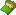
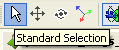
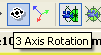
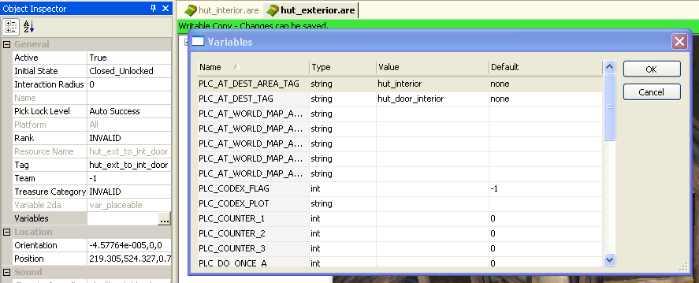
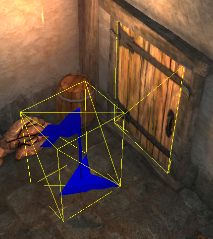
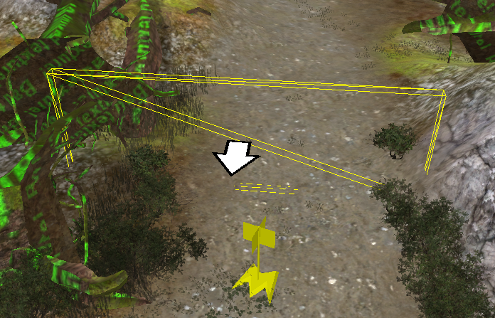

Area tutorial/ru
| Инструкция по локациям |
| Начало / Русская DA Builder Wiki / Поделиться ВКонтакте
|
| Area topics |
|---|
|
Contents
Создание локаций
После создания модуля(см. создание модуля (en)), первое что вы захотите, это создать одну или несколько игровых локаций, где развернется приключение. Сделать это можно различными способами: можно, нажав правую кнопку в окне палитры (resource palette, справа), выбрать New -> Area; или обратиться к опциям главного меню File->New->Area.
{kind=link}
Локации обозначены иконкой 
{kind=link}
{kind=link}
- Resref names should be useful to the designer
- Set the "area layout" property to assign terrain to an area
- "Resource Name" и "Tag" видны только разработчикам
- "Name" смогут увидеть и игроки
Большинство полей уже заполнены стандартными значениями. Вам нужно лишь заполнить поле имени ресурса "ResRefName". Данное имя будет использоваться в основном лишь редактором и в игре вы его не увидите. Постарайтесь использовать имена, которые будут вам напоминать о том, что это за ресурс. Думайте о названии ресурса заранее, т.к. сменить позже будет проблематично. Назовем нашу локацию "hut_exterior".
После создания перед вами появится совершенно пустое окно редактора. Чтобы выбрать на какой территории вы будете ставить объекты, перейдите в окно Object Inspector (если по умолчанию его нет, то вызовете его из главного меню View->Other Windows->Object Inspector), которое изначально находится под палитрой (Resource Palette). Там найдите свойство "Area Layout" и щелкните по кнопке с многоточием. Перед вами предстанут созданные разработчиками локации. Выберите "ost101d.arl". После загрузки перед вами будет представлена одна из локаций игры.
Чтобы дать локации имя, которое игрок сможет увидеть в игре, измените свойство "Name" и дайте любое имя какое хотите (в игре оно будет под мини-картой). Но в данном примере назовем локацию "Deep in the Swamp". Прочие настройки пока нас устроют и мы их трогать не будем.
{kind=link}
Основы работы с локацией
- Смотрите 3D навигация(en) для настроек камеры и перемещения
- Увеличить объект вы можете двойным щелчком по нему в списке объектов локации.
Способы перемещения по локации могут быть непривычны и не интуитивно понятны для новичков. В редакторе существует несколько настроек управления, которые вы можете выбрать (подробнее см. 3D навигация(en)). Пока же рассмотрим стандартное управление:
- Приближение/отдаление колесиком мыши;
- Вращение камеры при нажатом колесике или с зажатым Ctrl и правой кнопкой мыши;
- Перемещение камеры левой кнопкой мыши с зажатым Ctrl;
Чтоб лучше разглядеть, где вы находитесь, стоит отключить реальное освещение или полную яркость. Кнопка с изображением солнца над отображением локации должна быть выключена, для отключения высокой освещённости;(для более полной информации об опциях Area Editor смотри Локация(en)).
Иногда Area Editor может отображать только рёбра и вершины вашей локации, когда вы её создали. Вы можете переключиться на нормальный режим отображения из меню View в выбрав View->Environment->Render Mode->Normal.
Прежде чем мы разместим стартовую позицию, важно вспомнить о точках поиска путей. Все локации BioWare включают сети путей или информацию поиска путей. Для её просмотра на вашей локации, откройте View->Environment и включите Pathfinding Points. Зелёные точки, обозначают локации, где персонажи могут ходить. Замете, что на данной карте проходимая зона составляет малую часть. Когда вы размещаете стартовую позицию, убедитесь, что она в проходимой зоне.
Установка стартовой позиции
- Создайте точку пути(waypoint), чтобы пометить место в игре, в котором появится игрок
Итак, приступим к созданию стартовой области нашего приключения. Первым делом нужно определить точку, где появляется игрок в первый раз. Это достигается путем создания вэйпоинта (waypoint). Вэйпоинты – очень простые объекты, помечающие определенные места в области, к которым могут обратиться другие объекты в игре. Они невидимы для игрока. Чтобы создать вэйпоинт, нужно кликнуть правой кнопкой мыши в любом месте области и выбрать пункт меню “Insert Waypoint”. Вэйпоинт появится там, где находится ваш указатель мыши и будет следовать за ним. Переместите его приблизительно в то место, где вы хотите, чтобы появился игрок и кликните левой кнопкой мыши, чтобы разместить его. Изначально вэйпоинт называется “Waypoint”.
TВэйпоинт будет сразу автоматически выделен желтой структурной рамкой. Теперь вы еще увидите его в списке объектов области, в левой части окна программы. Если вы вдруг потеряете свой вэйпоинт, то лучший способ его найти – это кликнуть правой кнопкой мыши по его названию в списке и выбрать “Zoom to Object” или дважды кликнуть левой кнопкой. Свойства вэйпоинта будут показаны в окне инспектора объектов. Мы хотим поменять имя нашего вэйпоинта на что-нибудь более информативное. В данном случае на “start”. Также мы обязательно должны изменить таг(tag) вэйпоинта на “start”. Это важно непосредственно для самой игры. Таг объекта определяет, как к нему будут обращаться другие ресурсы игры. Так как данный вэйпоинт не будет виден игроку, то, вероятно, и его название никогда не будет ему известно. Игрок появится лицом в ту сторону, куда направлен вэйпоинт (обозначено стрелками). Если мы не хотим, чтобы игрок появлялся лицом в стандартном направлении, то нам следует развернуть вэйпоинт. Чтобы вращать объект выберите соответствующую опцию на панели инструментов. Вместо стандартного выбора
(
) to 3-axis rotation mode (
).
{kind=link}
{kind=link}
Когда вы выберите вэйпоинт в этом режиме, вы увидите ряд кругов различного расположения вокруг объекта. Чтобы вращать вэйпоинт, двигайте мышью, зажав левой кнопкой один из кругов.
{kind=link}
Итак, теперь у нас есть область и начальная точка. Мы можем указать модулю, что здесь будет появляться игрок. Откройте еще раз окно “Manage Modules” (команда в меню “File”), выберите ваш модуль, кликните кнопку “Properties”. Откроются свойства модуля. Нажмите кнопку для стартовой области (Starting Area) и выберите вашу стартовую область. В нашем случае – “hut_exterior”. Теперь мы можем выбрать стартовую позицию из вэйпоинтов. Отметьте, что список отображает НЕ имена, а таги. Добавление нашего вэйпоинта не будет сложным. Конечно, можно задать точку появления как начало карты (координаты 0,0,0), но это плохой выбор.
Областные переходы с помощью дверей
Обычно приключения включают в себя больше, чем одну область, так что мы создадим вторую, чтобы продемонстрировать переход между двумя областями. Область “hut_interior” будет использовать макет ost102d, который является удобной небольшой комнатой, представляющей интерьер маленькой хижины, размещенной в области “hut_exterior”.
- Doors are special placeables
- Doors can attach to "hooks" pre-built into the area layout
- Area transition doors use a different "appearance" than within-area doors
Теперь мы должны создать парочку дверей. Мы создадим стандартную дверь, используя команду “New Placable”. Ее можно найти там же, где и "New Area". Нужно разместить дверь в пустом дверном проеме в hut_exterior. Чтобы создать переход, используйте один из внешних видов дверей из категории “Area Transition”. Чтобы разместить дверь, нажмите на нее в палитре, а затем кликните вблизи дверного проема в самой области. Заметим, что если вы случайно используете один из стандартных внешних видов двери, то вместо перехода она просто распахнется, когда вы кликните по ней. У каждого стандартного внешнего вида есть такой же, но переходный. Примеры: "Area Transition, Ferelden Small" и "Door, Ferelden, Small". Так что ошибку допустить достаточно легко. И если вы ее допустили, не так сложно все исправить. Просто вернитесь к ресурсу двери и измените ошибочный на верный. Все копии будут заменены автоматически. Примеры: "Area Transition, Ferelden Small" и "Door, Ferelden, Small". Стоит отметить, что если выделить дверь, которую вы поместили в области, появится маленькая синяя сфера в дополнение к каркасной ограничивающей решетке. Это «крюк»(“hook”) двери. Макеты областей содержат скрытые «крюки», обозначающие места, где можно разместить дверь. А двери, в свое время, имеют соединительные крюки. Если вы кликнете по синей сфере, она загорится красным, и появятся все подходящие для размещения двери крюки в данной области. Это изображение иллюстрирует это:
{kind=link}
Чтобы соединить дверь с ее рамой, просто кликните и тяните дверной крюк поближе к крюку рамы. Вы не обязаны перемещать дверь точно в проем, когда вы подведете ее достаточно близко к крюку рамы и отпустите, они соединятся самостоятельно. Дверь будет размещена и ориентирована точно в раму. Убедитесь, что вы все еще в режиме стандартного выбора ( ), чтобы описанные выше действия произошли. Заметьте, что крюки существуют лишь для удобства создателя мода, и двери могут работать в любых других местах.
- Area transition effect is defined in the door's "Variables" property
Итак, теперь мы скажем движку игры, что эта дверь осуществляет переход в другую область при нажатии на нее. Это достигается путем изменения двух переменных двери. Выберите дверь (это можно сделать как на макете области, так и в палитре), кликните правой кнопкой мыши по ней, выберите “properties”. Откроются опции двери в окне инспектора объектов. Выберите свойство “Variables” и кликните на ( ). Это откроет список переменных для различных состояний двери. В этом списке есть две ключевые переменные, которые нам надо установить:
- PLC_AT_DEST_AREA_TAG - – таг, определяющий целевую область
- PLC_AT_DEST_TAG - таг, представляющий точку входа в целевую область. Эту точку вы должны добавить, так как она НЕ добавляется автоматически при создании двери.
После того, как мы их установили, дверь становится переходом и работает, когда игрок взаимодействует с ней. Целевая область – "hut_interior". Мы создадим вэйпоинт позади двери в целевой области. Его таг будет "hut_door_interior", и он будет служить местом появления игрока. Вот как должны выглядеть переменные внешней двери:
{kind=link}

А это дверь с точкой назначения:
{kind=link}

Внутренняя дверь настраивается по тому же принципу, что и внешняя. Область назначения – "hut_exterior", точка назначения – "hut_door_exterior".
- Use invisible area transition "doors" when the transition is already built into the area layout art
Если вы хотите создать точку перемещения, не выглядящую, как дверь, вы можете использовать невидимую «дверь». Поэтому вы должны создать невидимый размещаемый объект. См. Объекты для того, чтобы узнать больше деталей. Первый определяющий пункт для объекта – внешний вид. Для того, что нам нужно, подходит тип внешнего вида "Area Transition, Invisible". Выберите один из них по желанию. Вы можете добавить осмысленное имя вашему переходу в процессе его создания в поле "Name". После того, как вы создали объект, вы можете разместить его где хотите. Теперь ограничительная каркасная рамка особенно важна, так как вы не видите объект. Теперь можете настроить его переменные, как в случае с дверью.
{kind=link}

Игрок не будет видеть эту «дверь» в игре, но, когда он поместит указатель мыши на нее, тот примет вид, обозначающий переход. Также, как и видимая дверь, активируется кликом правой кнопки мыши.
Областные переходы с помощью триггеров
- Triggers use variables with a different prefix for setting their area transition effect
Наконец, вы можете создать областной переход, который срабатывает, как только игрок входит в определенную область. Для этого используются триггеры ( ). Для начала, нужно создать триггер. Это происходит примерно, как и создание размещаемого объекта, но намного проще. Здесь не нужно изменять какие-либо свойства. Создаем стандартный триггер "New -> Trigger" (либо с помощью клика правой кнопки мыши на палитре ресурсов или через меню Файл) и даем ему информативное имя, как, к примеру, "trigger_area_transition".
Вернитесь на карту вашей области, выберите триггер из палитры ресурсов и кликните по карте, чтобы установить угловые точки триггера. Двойной клик по последней вершине завершит процесс размещения. Триггер может быть снабжен бесконечным количеством вершин, которые могут быть добавлены, пермещены или удалены после создания триггера, так что не волнуйтесь, если не обозначили все совершенно правильно при создании. Отметьте, что синий слой, которым триггер отмечает зону своего действия, простирается не только по земле, но и в вертикальном пространстве. Чтобы установить назначение триггера, вы должны найти несколько переменных в списке стандартных переменных триггера:
- TRIGGER_AT_DEST_AREA_TAG - область назначения
- TRIGGER_AT_DEST_TAG - точка назначения
(Note the prefix "TRIGGER" instead of "PLC")
Ниже находится пример, в котором мы поместили триггер и невидимую дверь на пути игрока. Отметьте, что это избыточно, так как по-настоящему нужно лишь что-то одно из этого. Для большинства случаев размещаемый переход все-таки лучше. Тут уж решать вам: если вы хотите, чтобы переход активировался нажатием, то, естественно, используйте размещаемый переход. В противном случае – триггер. Показанный вэйпоинт является точкой прибытия для игрока. Отметьте, как он расположен. У игрока есть возможность сразу развернуться и вернуться в предыдущую область.
{kind=link}
Группировка размещаемых объектов
- Два или более объекта могут быть сгруппированы с помощью Ассоциаций (Associations).
Часто объекты в пределах области связаны. К примеру, к объекту может быть привязан звук. Тулсет должен знать, что эти объекты связаны.
1. Создайте новый размещаемый объект и измените его внешний вид на “Firepit (Dialog)”, а затем поместите в своей области. Помните, что, если вы не можете видеть новый объект, убедитесь, что открыли верный модуль. 2. Теперь кликните по иконке музыкальной ноты в палитре ресурсов. 3. В открывшемся дереве папок перейдите к global_amb_fade > 3D_placeables > 3d_emitter, выберите amb_ext_smfire1_lp и поместите эмиттер в вашей области. 4. Кликните правой кнопкой по объекту firepit и выберите в меню "Add Associated object." 5. Теперь щелкните по размещаемому звуку на карте области. Теперь если вы перемещаете объект firepit, то звук будет следовать за ним. Если же вы хотите удалить ассоциацию, то используйте меню "Managed Links". Отметьте, что ассоциации однонаправлены. Вы все еще можете перемещать звук отдельно от объекта. Примеры ассоциаций: стол и предметы на нем, стол окруженный стульями и т.д.
Sound
Sounds are placed using the Area Editor. For more details see Sound.
| Язык: | English • русский |
|---|